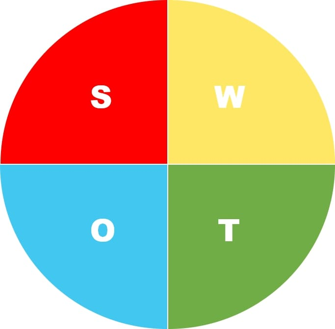

My SWOT

Strength(강점)
한번 문제를 잡으면 끝까지 해결해야 함. 집념이 있음.
수학을 기반으로 한 암호학과 시스템 보안을 동시에 학습함으로써 다양한 분야에 능통한 정보보안 전문가로 거듭남.
Weakness(약점)
시스템 보안에 관련된 많은 자료가 외국어 자료이고 이마저도 많이 없음.
대외적으로 알려진 단계별 커리큘럼이 없어 암호학과 시스템 보안에 대한 공부 도구가 부족함.
Opportunity(기회)
모든 생활이 네트워크로 연결된 이른바 스마트사회에서 정보보안은 핵심적인 기술로 손꼽히고 있음.
국가는 정보보안 분야 전문가를 양성하기 위해 여러 가지 정책을 펼치고 있음.
Threat(위협)
버그바운티가 허용되지 않은 사이트에서 취약점을 찾는다면 위법행위가 될 수 있음.